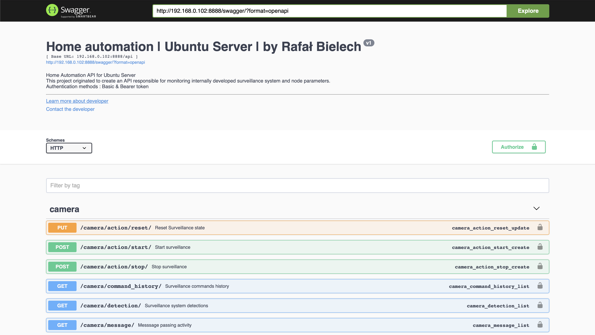
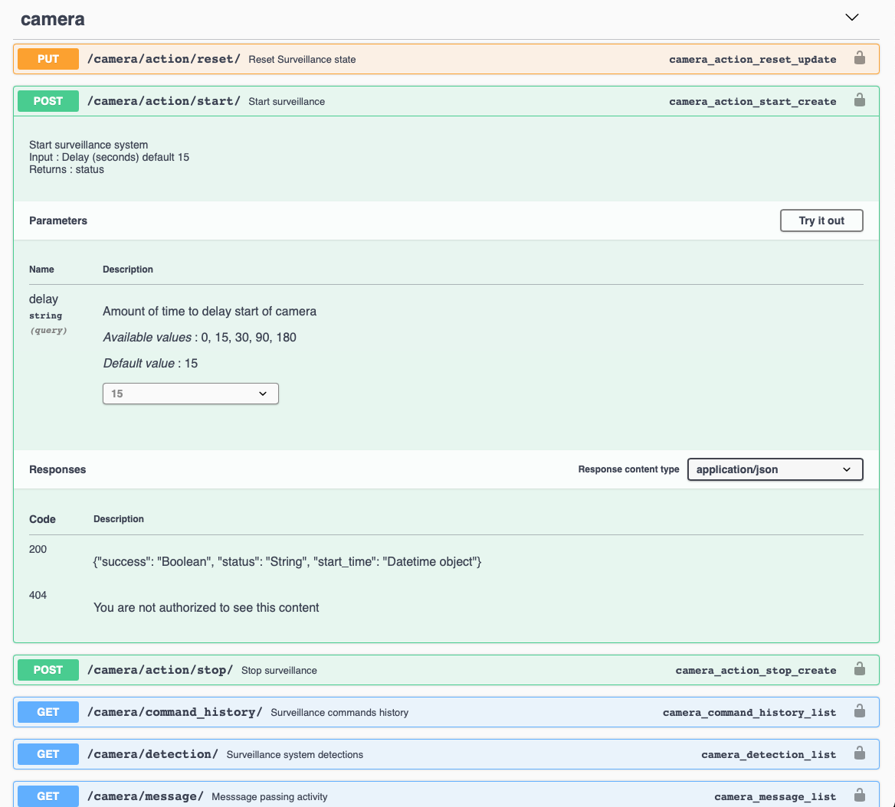

Code is made available on Github, executing on home
network deployed with Gunicorn and Nginx.
This project was designed to operate home-grown surveillance system
and collect node parameters (running on Raspberry PI 3b+ and Ubuntu Server) while maintaining
microservice architecture. This enables surveillance system to be incorporated with Siri, Alexa, and
other virtual assistants because authentication is done using JWT. A seperate web portal was built to
operate and visualize parameters.
Programming Languages, Tools & Platforms
Web portal & Documentation
API documentation
RF documentation was done with Swagger which enables interacting with the routes in the
web portal. The application was built with Basic and Bearer authentication and anyone
can either log in or provide their Bearer token to see results for each route.
/camera route is responsible for starting/stopping and providing supporting information
like when history of detections, commands, and messages (messages are a way to store
information from the working threads when RTSP capture has to reset and other
information).
/parameter is responsible for saving and retrieving general node parameters like CPU
utilization, temp, memory etc but also information pertaining to internet speed.

Passing in parameters
Swagger makes it simple to add IN-QUERY parameters like "delay" in the adjacent
image which has available values of 0, 15, 30, 90, and 180 seconds. The authentication
tokens are passed by default in the HEADER.

Capture and Classify
First steps and history behind this product
This project started out in 2018, when I was studying about neural networks at
UMass while doing a master's degree in computer science.
Prior to learning about AI, I did a very initial "surveillance" system using Background subtraction methods however, I quickly learned that
this was not a good approach because I was getting a lot of notifications when there
were no people detected in the frame.
Thus, the next step was to build a model using pytorch resembling MTCNN architecture and
trained on
Faces in the Wild
Real-time facial detection using Ubuntu laptop
In below video, is my implementation of facial detection running on a news video about
Black Friday.
Classifying frames
Raspberry PI is a constrained environment, thus, I opted for a highly optimized
single shot detector: you
can read about it here
I am currently using a combination of Raspberry PI camera module v2 and IP
cameras
that I access over RTSP protocol. One particular issue that I came across
trying to
get feed from RTSP is that the capture feed gets corrupted sometimes, while using
OpenCv2
VideoCapture method. I initially approached this issue by restarting the
thread with a
a capture worker, and then if there is a corruption, close the thread and start a
new thread. However, I learned that this is not a good solution because it is more
system exhaustive compare to using a while function that just restarts after the
video capture corrupts.
Putting this all together, the executing the /start route starts a new process
executes on the host machine. The process's PID gets saved into the database, so
that it can be used to later kill the process when I execute the /stop route.
The new process starts several new threads, one thread is in charge of capturing
video feed and saves the frame into a Input Queue (size 1) if the Queue is empty. A
separate thread (detection thread) reads the Queue and runs the frame through a
person detection model that either returns True or False if people are detected in
the frame. If a person is detected, then the frame is saved to the hard disk and the
path to the frame is then saved to the detection Queue. A separate thread then reads
the detection Queue, if there is more than minimum amount of detections in the
queue, then all of the images are loaded into email (using django email module) and
then send out and frames deleted and respective items are deleted from the detection
Queue.
Why Input and Detection queue?
Queues are used to enable multiple capture threads (multiple RTSP cameras) being able
to write to the same queue without having to start new threads for detection.
Separating capture and detection helps in reducing the number of video capture
corruptions.
Django models and authentication
Django models to store information in database
I am using django models to store information regarding surveillance status, camera
detections, thread processes information, parameters and other information.
I manage Access Tokens in a separate table that I am able to quickly access using the
django admin console.
In the code below, for Bearer token I first check whether the token is in the AccessToken
Table, if it is not, then 404 Error is returned. Then, if the token is not valid,
another reason to return 404 Error else, update last used attribute.
.....
if "Bearer" in token_list:
obj = get_object_or_404(AccessToken, access_token=token_list[1])
if not obj.valid:
raise PermissionDenied()
else:
" Get the originator & update last_used date "
obj.last_used = datetime.datetime.now()
obj.save()
elif "Basic" in token_list:
originator = request.user
except:
raise PermissionDenied()
........